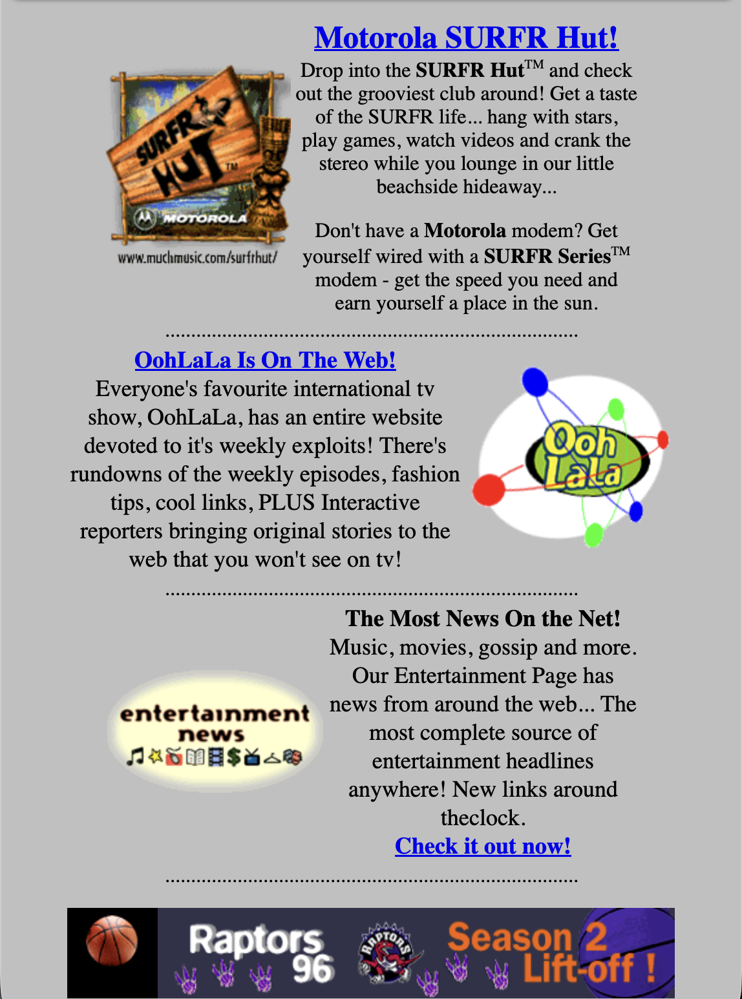
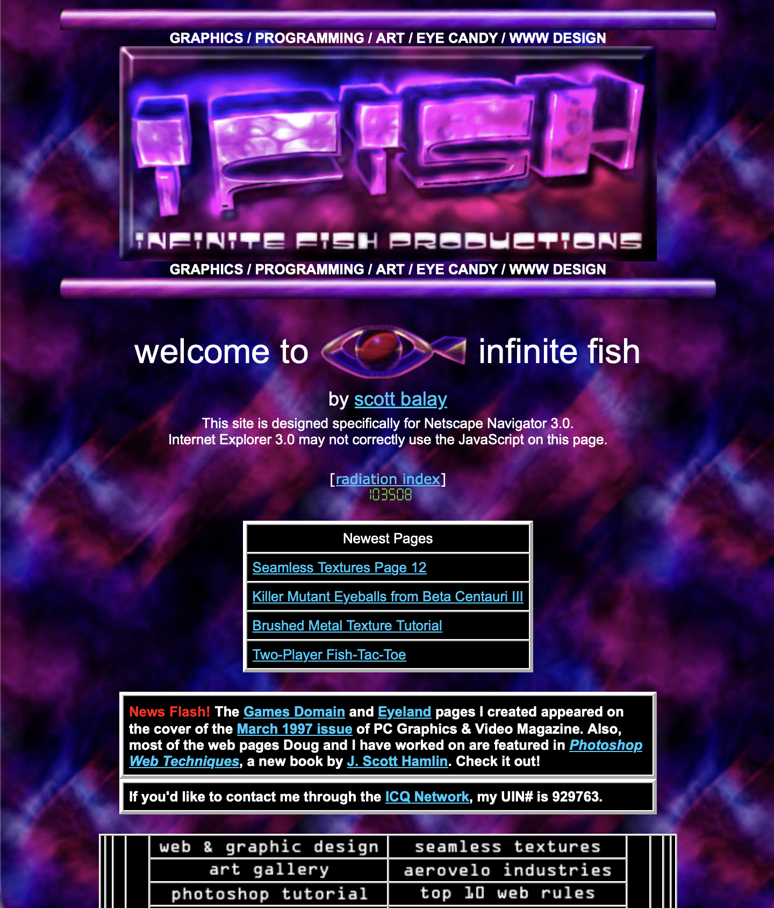
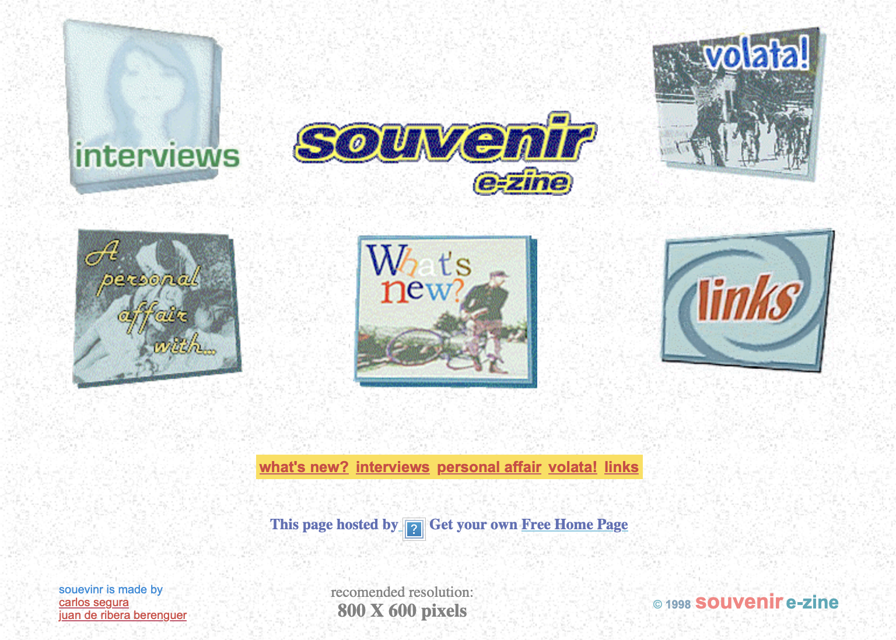
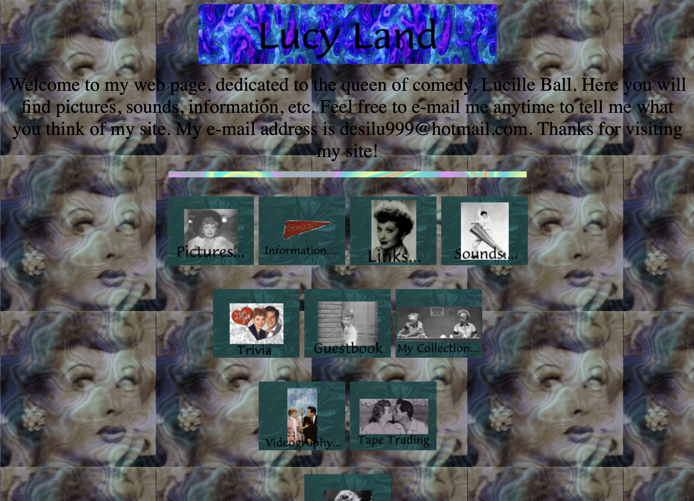

Because the internet was fairly new, early internet websites had a very distinct visual style that is very different from modern web design. Many early websites prioritized creativity and experimentation. Sites featured bright colors, custom layouts, and decorative elements to make their pages stand out.
Layouts

For beginners in the mid to late 90s, websites were often very simple and followed a long, vertical format. Content was stacked on top of each other, with text, images, dividers and links arranged in a single column that users would scroll through. These layouts were easy to create using basic HTML, likely minimal or no CSS, and they did not require advanced design knowledge.

More experienced web designers in the early 2000s created more complex and visually structured layouts. Many of them designed their layouts in programs like Photoshop and then used HTML tables or sliced images to recreate those designs on a webpage (I used this method for my site’s layout). This allowed them to control the placement of different sections, such as navigation bars, headers, and content areas. These layouts often look more polished and organized, even though they were more difficult to build. Custom layouts were more common in websites for bands, musicians, or official websites.

Bright colors & tiled backgrounds

Early websites often used bright, highly saturated colors like neon green, blue, and pink. Fonts were usually simple, but people sometimes used decorative or hard-to-read text styles that clashed with the backgrounds. The combination of bold colors and text made many pages visually overwhelming but unique.